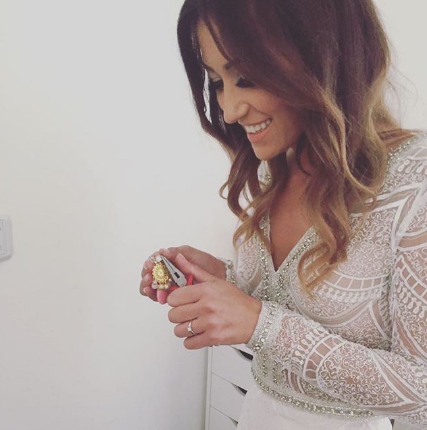

Lunula Design LD osnovan je još 2012. godine prvenstveno kao obrt za izradu nakita. Pokrenula ga je tada 25-ogodišnja djevojka Martina netom nakon završetka diplomskog studija na Ekonomskom fakultetu u Osijeku. Kako su godine prolazile tako je njegova vlasnica proširila proizvodnju. U početku su to bile naušnice, ogrlice i narukvice, a danas možemo naći od odjeće, raznih dekoracija pa sve do personalizirane dječje obuće. Ono što Lunula Design nudi je unikatnost svake izrađene stvarčice.
